In this part, I experimented with pretrained diffusion models (DeepFloyd IF) and implemented sampling, denoising, inpainting, and visual illusion generation. The goal was to understand the mechanics of diffusion, iterative denoising, and classifier-free guidance (CFG). Below are my results and analyses for each section.
I began by generating embeddings for several text prompts and using the DeepFloyd IF model to produce corresponding images.
I experimented with different num_inference_steps values and reflected on how they affected image quality.
My embeddings: ['A photorealistic close-up of a neon-lit cybernetic owl perched on a rain-slicked Tokyo street, digital art', 'An impressionist oil painting of a small red spaceship landing gently in a field of sunflowers at sunset, vibrant colors', 'A dramatic black and white photograph of an ancient stone labyrinth covered in moss, mist rising from the center, cinematic lighting', 'A detailed lithograph of a magnificent waterfall cascading into a still lake, dark shadows', 'An oil painting of a venerable old man with a long beard and a contemplative expression', 'A watercolor of a large, fluffy white cloud floating over a vast blue ocean, serene', 'A high-quality photo of a majestic lion roaring, golden light', 'A detailed ink sketch of a tall lighthouse standing on a rocky cliff', 'A vivid abstract painting dominated by large, round blue and green shapes', 'a high quality photo', '']
Random Seed: 67
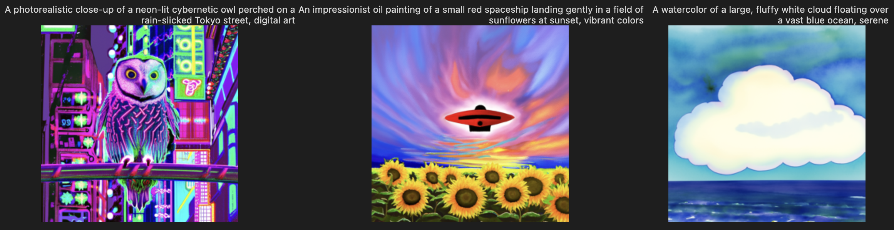
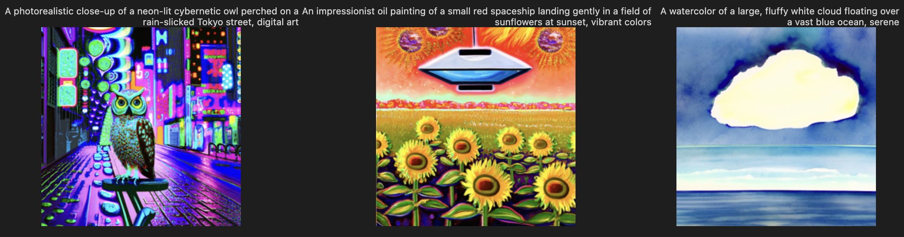
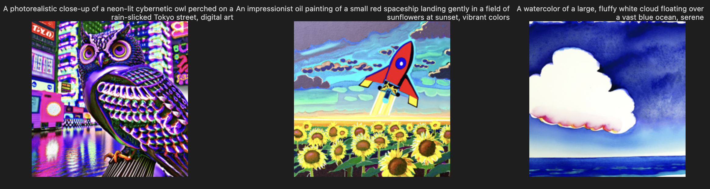
Reflection: As you can see, as I increased the inference steps the overall quality of the image increases.
The subject of the prompt and the background both increase in quality and detail with more consistent lines and shapes
num_inference_steps values.
I implemented the forward diffusion process, which progressively adds Gaussian noise to the image at specified timesteps. Below are the noisy versions of the Berkeley Campanile image.

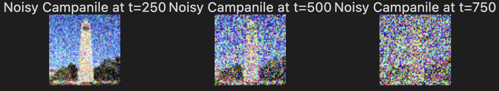
I applied Gaussian blur to attempt to denoise the noisy Campanile images. As expected, the results were poor — classical filters cannot recover fine details lost in heavy Gaussian noise.
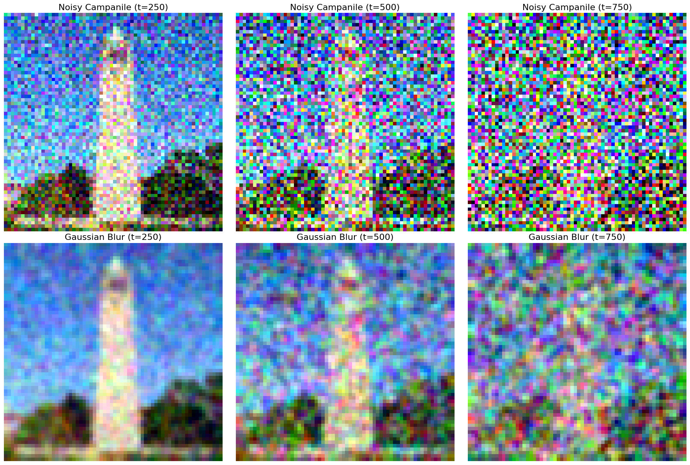
Using the pretrained UNet denoiser, I performed one-step denoising for each noise level. This produced noticeably better reconstructions compared to Gaussian blur, though still imperfect at higher noise levels.
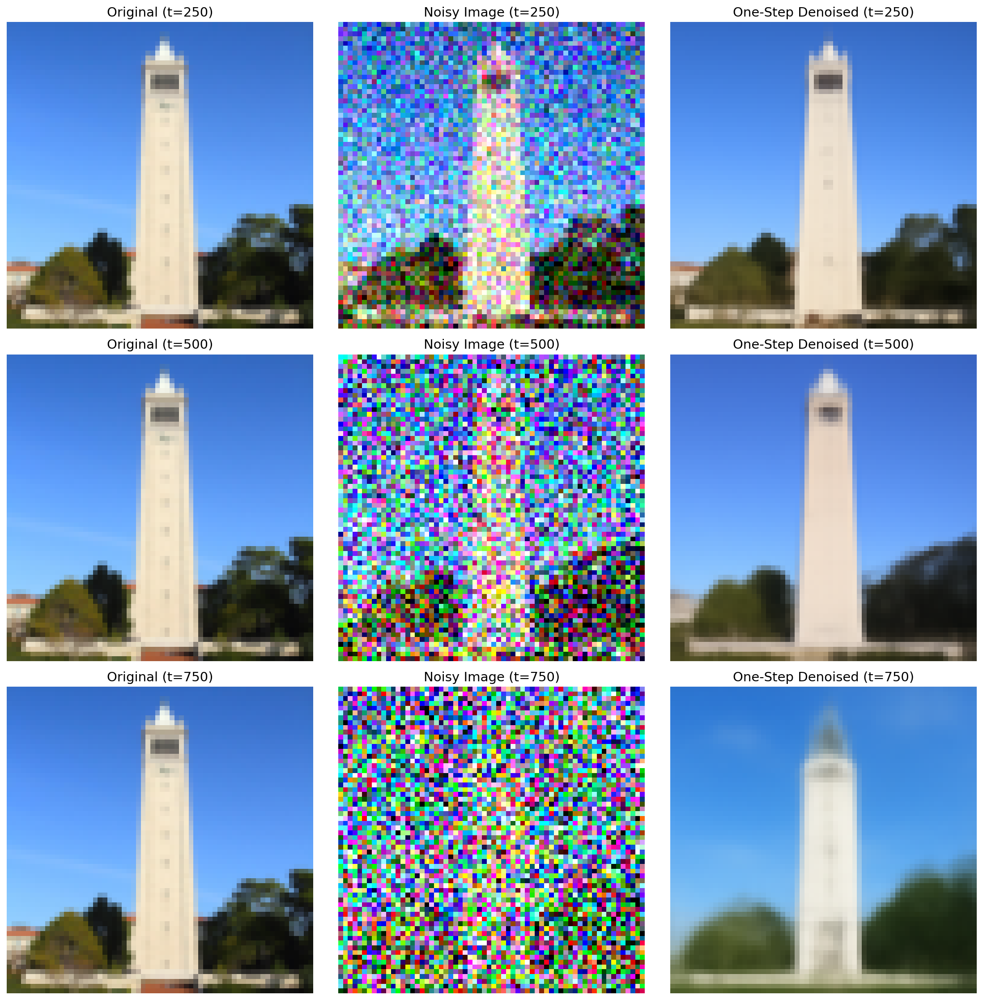
I implemented iterative denoising using a strided timestep schedule. The image gradually becomes clearer as the diffusion process progresses. This approach outperformed one-step denoising and classical filtering.
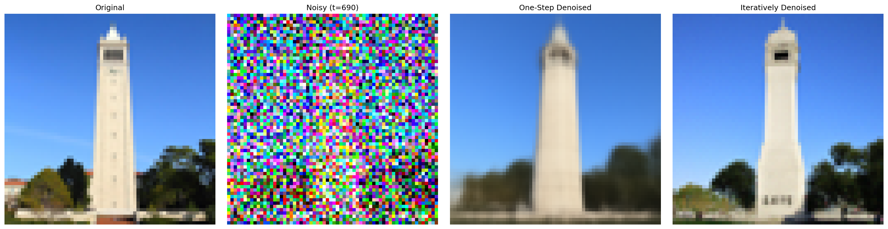
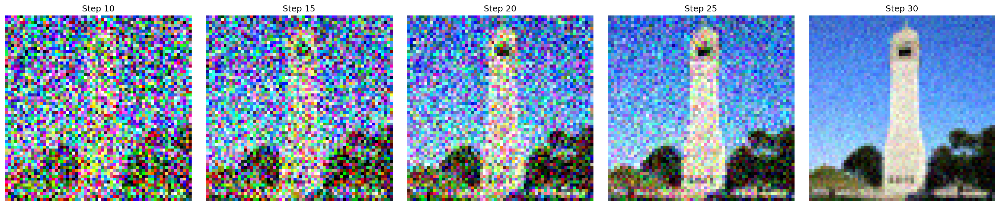
I generated random samples from pure noise using my iterative denoising loop. The prompt used was "a high quality photo". These early results show recognizable but imperfect natural images.
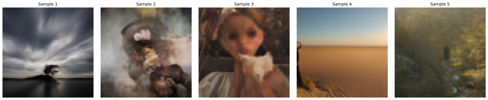
Implemented CFG to enhance image fidelity by combining conditional and unconditional denoising predictions. This significantly improved realism and prompt adherence at the cost of diversity.
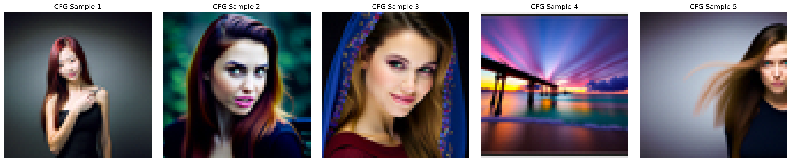
I added small amounts of noise to the Campanile image and iteratively denoised with CFG. Lower noise levels preserved structure, while higher noise levels created more dramatic “edits.”
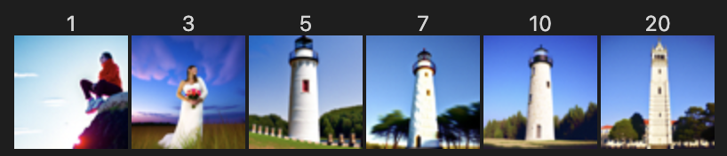
I tested SDEdit on both web images and two hand-drawn sketches. As noise increased, the model “realized” my drawings into photorealistic interpretations.

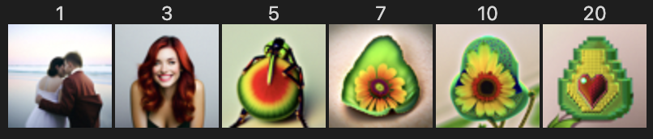
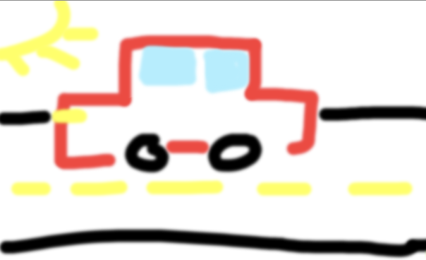
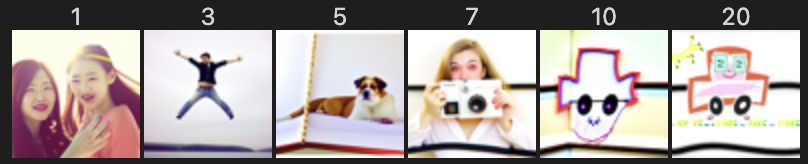
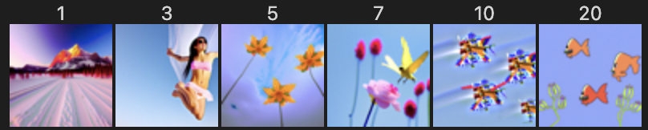
Implemented inpainting by replacing masked pixels with diffusion-based denoised samples while preserving the unmasked regions. This enabled realistic hole-filling and object replacement.
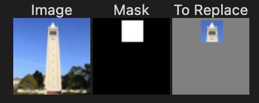
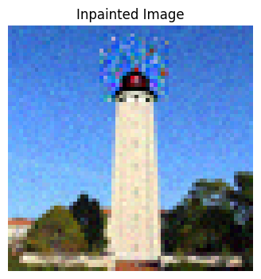
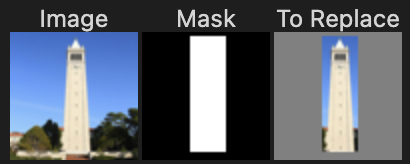
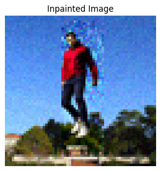
I guided SDEdit with custom text prompts to modify images semantically. For example, I turned the campanile into an owl, a car into a ufo, and fish into a cloud
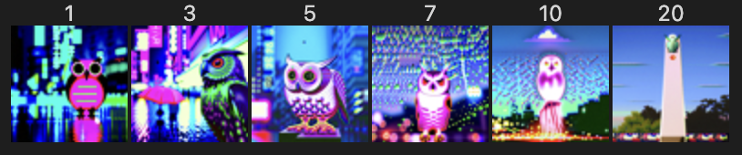
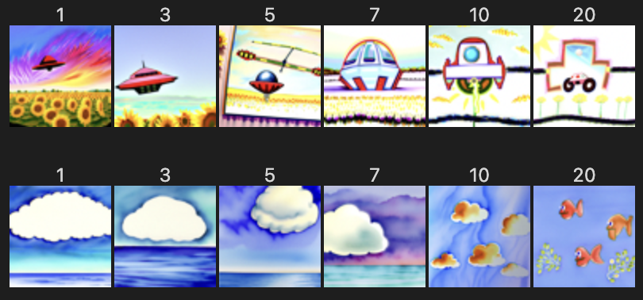
Created visual illusions where one image transforms into another when flipped upside down. This required averaging denoiser outputs conditioned on two different prompts.
A waterful upright and a light tower flipped
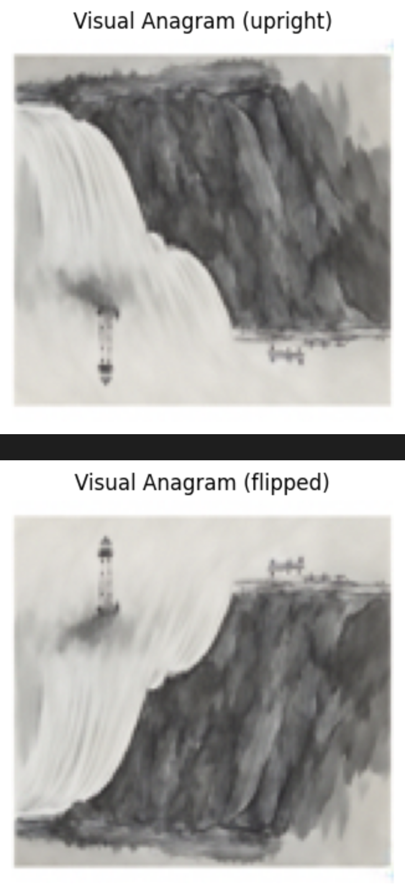
A UFO upright and an owl flipped both behind flowers
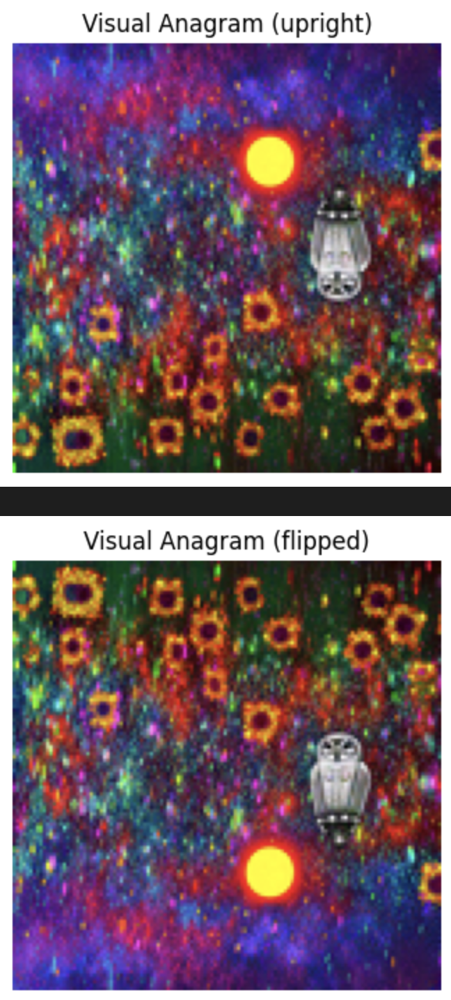
Implemented factorized diffusion to blend low frequencies from one prompt with high frequencies from another. These hybrid images reveal different content depending on viewing distance or frequency domain.
Lighthouses up close and lions from far away
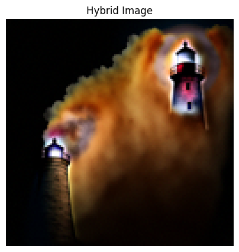
UFO up close and an owl from far away
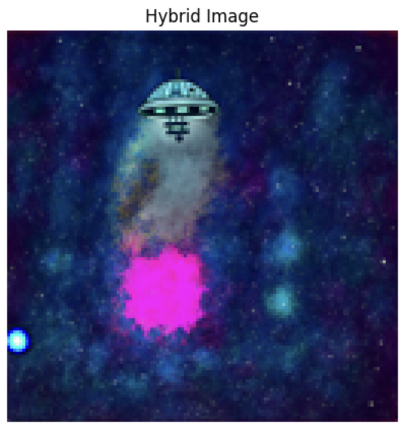
During part A of this project, I learned how diffusion models iteratively refine noisy images, how classifier-free guidance improves realism, and how denoising can be repurposed for creative tasks like inpainting and hybrid imagery. Implementing each step gave me an intuitive grasp of diffusion as both a generative and reconstructive process.
In this part of the project, I trained several UNet architectures on the MNIST dataset to perform flow matching. I first built a simple one-step denoiser, then extended it with time conditioning and finally class conditioning. The goal was to understand the flow matching framework and how conditioning improves generative quality.
I implemented a UNet with downsampling and upsampling blocks, skip connections, and convolutional layers following the architecture diagram provided. The network was designed to take a noisy MNIST image and output its denoised version. Below is the schematic architecture I used.
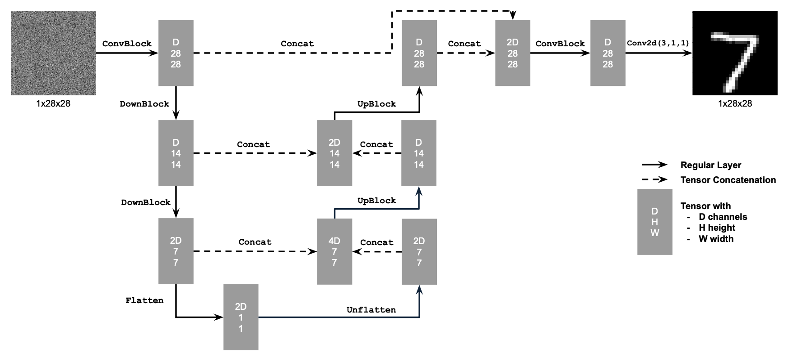
Before training, I visualized the noising process for several values of the noise parameter σ. As expected, higher σ values produced progressively noisier digits.
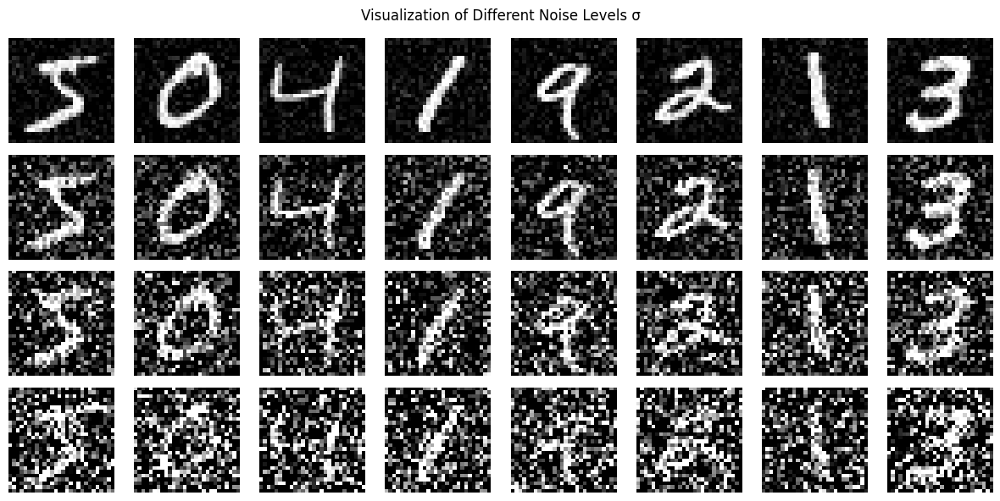
I trained the UNet on the MNIST training set for 5 epochs with Adam optimizer (lr=1e-4).
The training objective minimized the L2 reconstruction loss between clean and denoised images.
The model gradually learned to recover the underlying digit structure from noisy inputs.
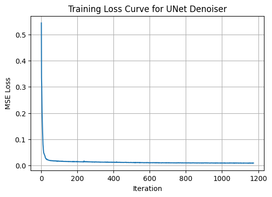
Results after 1 epoch:
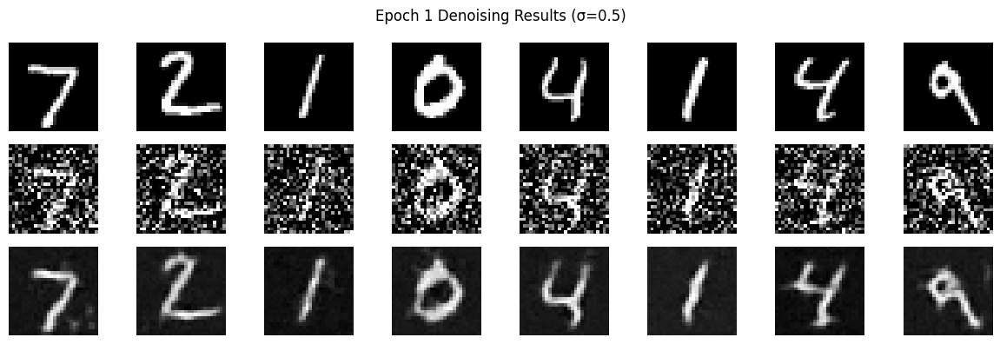
Results after 5 epochs:
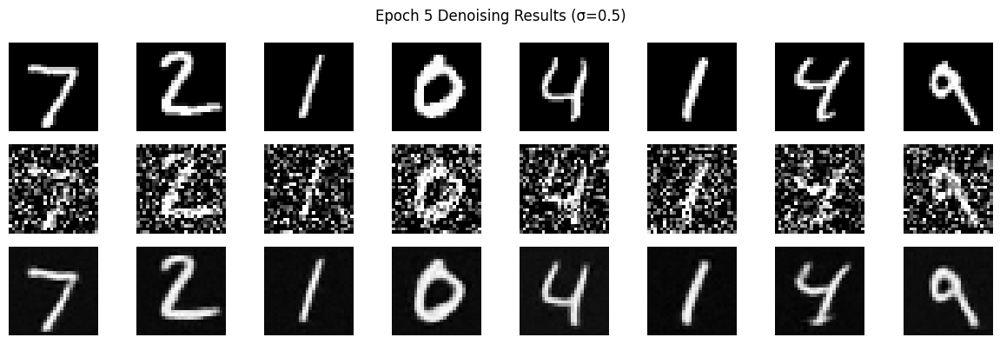
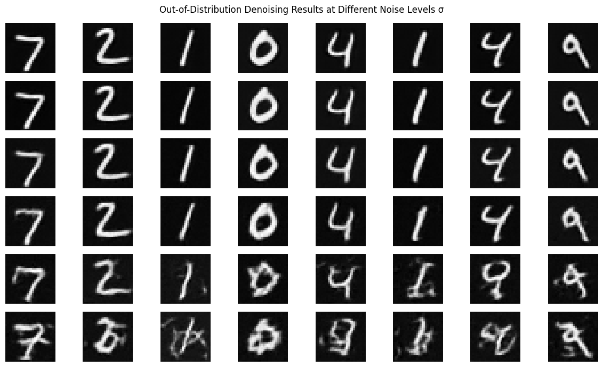
I tested the denoiser on unseen noise levels to examine its generalization ability. As noise deviated from the training distribution, reconstruction quality degraded, especially at extreme noise values.
After several epochs, outputs resemble blurry averages of MNIST digits. Because the model minimizes MSE over all training digits, it learns the pixel-wise mean of the dataset — roughly the centroid of all digits — rather than distinct numbers. This is expected behavior for MSE loss.
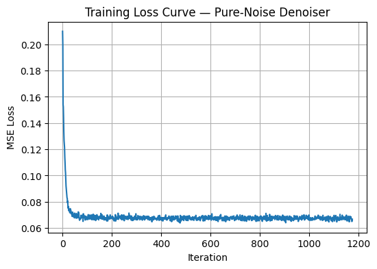
Results after 1 epoch:
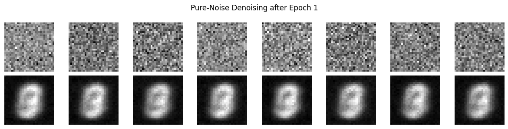
Results after 5 epochs:
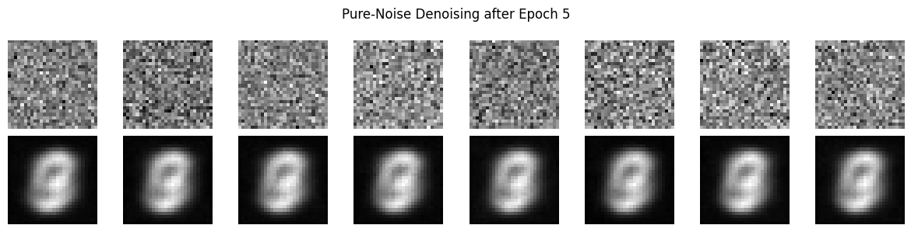
After exploring simple denoising, I trained a time-conditioned UNet to predict the flow between noisy and clean samples. Flow matching allows iterative denoising and true generative sampling.
I modified the UNet to accept a scalar timestep t, normalized to [0,1]. This value was embedded via fully-connected layers and modulated intermediate UNet activations as described in the spec. Below is a schematic illustration of the conditioning mechanism.
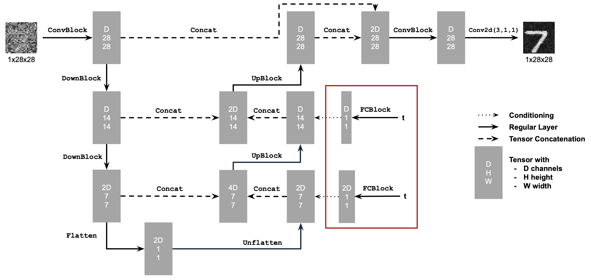
I trained the time-conditioned model with batch size 64 for several epochs. The exponential learning rate scheduler (γ=0.95) improved stability. The model learned to predict the flow between clean and noisy distributions effectively.
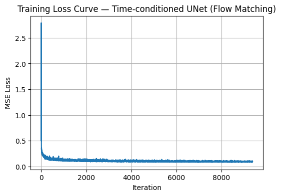
I used the trained UNet to iteratively denoise pure noise and generate MNIST-like samples. The quality improved steadily over epochs, producing recognizable digits after 10 epochs.
Samples after 1 epoch:
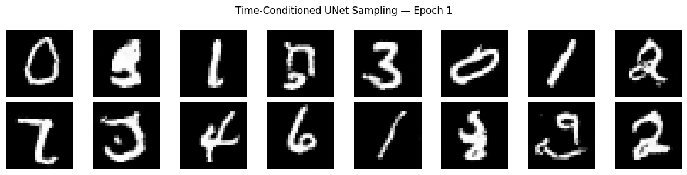
Samples after 5 epochs:
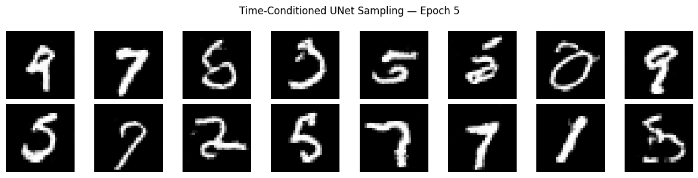
Samples after 10 epochs:
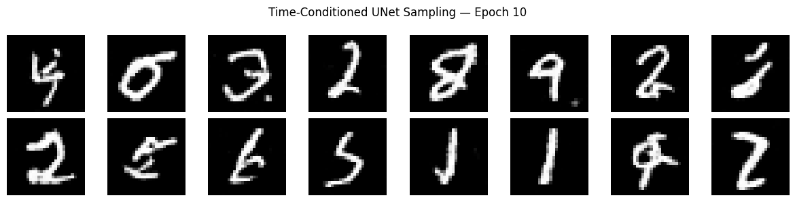
To improve sample quality and control, I added class conditioning via one-hot vectors. Each digit class was embedded through two additional fully-connected blocks and combined with the time conditioning signal. Dropout (10%) was used for classifier-free guidance.
Training followed the same setup as the time-conditioned model but now included class-conditioning vectors. The model converged faster and achieved better perceptual quality.
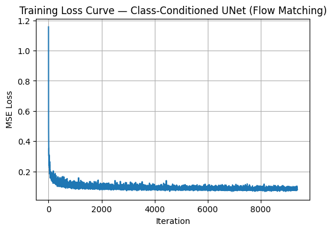
The class-conditioned model produced the best results. After 10 epochs, generated digits were clean and diverse. I generated 4 samples per class (digits 0–9) for comparison.
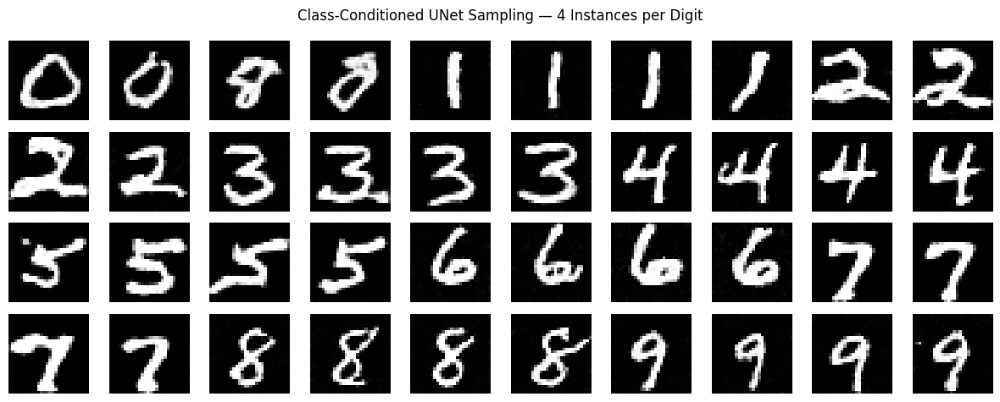
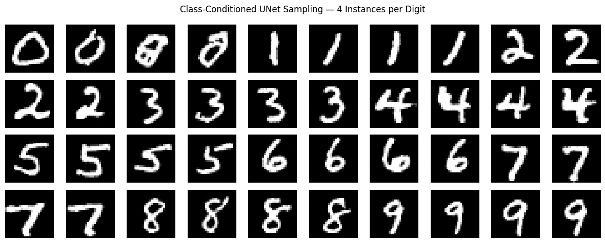
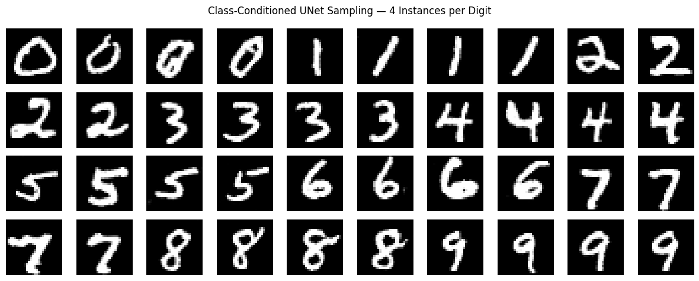
To simplify training, I removed the exponential scheduler and compensated by slightly reducing the base learning rate and using gradient clipping to prevent instability. The final model maintained similar performance while eliminating unnecessary complexity.
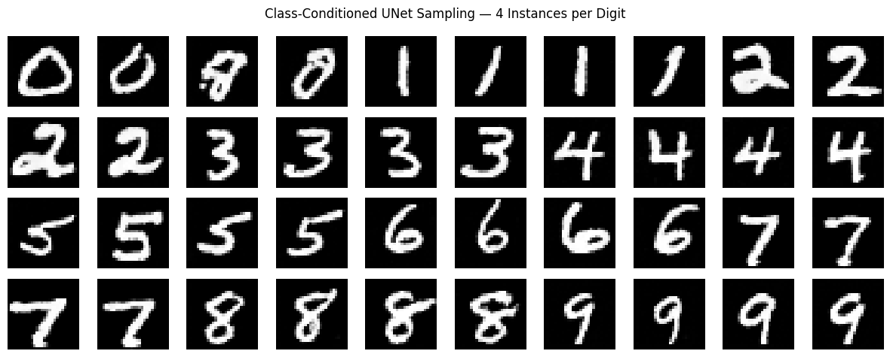
This part of the project solidified my understanding of diffusion-like training through flow matching. Implementing UNets with time and class conditioning demonstrated how conditioning guides generative behavior and stabilizes learning. I also observed firsthand how architectural and training design choices, such as skip connections, conditioning, and scheduler tuning, influence convergence and quality.